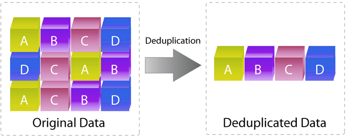
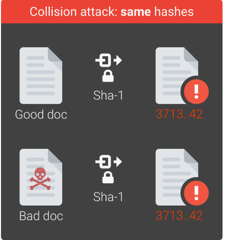
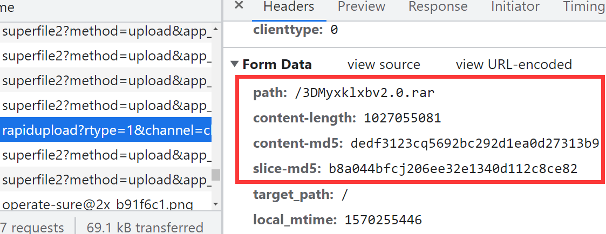
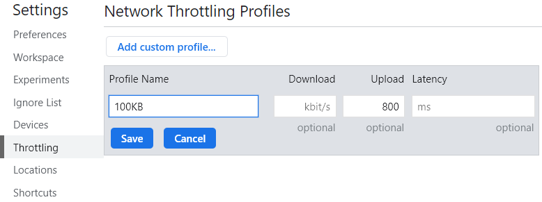
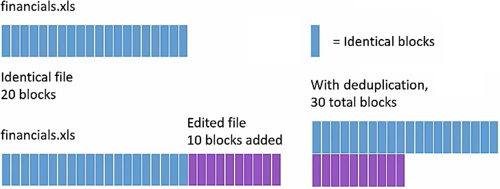

事先声明，我不是研究这个方向的，只是单纯对这一块的知识感兴趣。所以这只是一篇科普性的报告。当然，我会尽可能保证内容的准确性。如果有研究这个方向的大佬，欢迎批评指正！
概念
浅谈存储重删压缩技术（一）【图文】_煮酒论IT_51CTO博客
Data Deduplication：数据重删，顾名思义就是“将重复多余的数据删除”。
以下简称dedup。
百度网盘
百度网盘有两个非常神奇的功能。
一个叫极速秒传。GB级别的大文件，可能几秒钟后就显示“上传完毕”了。
另一个叫违规文件检测。如果你上传了什么包含违法信息的文件，百度不会再允许用户下载这个文件，包括你自己。
这两个功能都使用了dedup技术。具体来说：
- 当你在上传一个文件的时候，如果别人的百度网盘里有这个文件，就不用上传了，直接标记一下“你也有这个文件”就行了。
- 类似地，这个之前已经所有被百度查封过的违规文件在百度上都有记录。如果你上传了这些违规文件中的某一个，那么百度就会立刻识别出来。
所以，其实资本家很聪（e）明（xin）的。看上去百度云送了你2T的免费空间，可能真正存到它网盘里的就几KB。
但从中我们可以看出，dedup有个明显的好处，那就是节（jing）省（hua）空（wang）间（luo）。

在云存储领域，dedup往往能够带来巨大的空间节省，特别是当数据的重复度很高的时候。Windows/Linux中的文件系统链接（link）其实就是简单的dedup。
只是这种形式的dedup是用户控制的，只能用在你保存别人分享的文件的时候。
重复文件识别
cryptography - is SHA-512 collision resistant? - Stack Overflow
“摘要”
如果要人来识别重复文件，人会怎么做？最普通的办法是像Linux的diff命令一样，顺序比较。然而这种方法显然不能满足“秒传”的要求，搞不好要把整个文件都传到服务器去比较。
"清"华大学是全国最好的大学
"北"京大学是全国最好的大学
清华大学是"北京"最好的大学
要满足“秒传”的要求，显然只传一部分呢？那就只能挑选文件中的某些数据了。但是，怎么挑选呢？而且，并不是所有文件都是可读的文本。二进制文件怎么办？
这时候一般人的知识就不够用了，需要科学家的智慧了。
计算指纹
对于一般的二进制文件，要计算出一个特殊的标识符，可以使用“指纹”技术。
就像人的指纹一样，计算机也可以生成文件的“指纹”，把一个文件变成一串比较短的数字。这类特殊算法称为加密哈希函数（Cryptographic Hash Function）。常见的有MD5和SHA1，熟悉区块链的读者对此应该不陌生。如果你是Linux系统，可以在命令行里试一试：
$ sha1sum foo
0c73382a147681d394bd55ca30a22192334bc161 foo
$ md5sum foo
0115ada7f10934a8163a7e2db641610f foo
Windows也有类似的函数，我就不举例了。看上去就像随机生成的乱码一样，但这类函数有个神奇的性质：但凡输入的文件改变一点点，输出的指纹都会完全不同。这些函数的数学原理我不清楚，有兴趣的读者可以自行了解。
如果指纹一样怎么办？当然现实换句话说，把一个大文件变小肯定会导致信息丢失，所以两个文件计算出来的指纹有可能是一样的。

有个简单粗暴的方法，那就是多录一个指纹。你觉得单独用MD5不可靠，那就同时用MD5和SHA512，或者自己发明新的算法，把“指纹”的信息量拉大。
冲突的概率
以指纹最长的SHA512为例。SHA512生成的指纹长度只有64B，但它的可靠性已经达到理论上$N(p\ge 10^{-9})=1.4×10^{77}$。即，如果全网用户每秒钟上传10亿个文件，理论上要经过$3\times 10^{69}$年，这些文件才会发生冲突，到那时候世界都毁灭了。
所以，如网上所说，通常来说MD5或SHA1就足够了。有钻牛角尖的人可能会说，万一刚好就发生了小概率事件，用户丢文件了怎么办？那我估计，百度也不会承担责任，实在不行就给你一个单独的人工申诉通道。🤔
分析百度网盘的上传过程
百度云的「极速秒传」使用的是什么技术？ - stormfeng的回答 - 知乎
根据知乎上的提示，我自己试了一下，使用Chrome开发者工具检查网页端的百度网盘上传时的HTTP请求。
superfile这个链接是普通上传的链接。数据是一段一段上传的，间接解释了为什么百度云支持断点续传。在触发极速秒传的时候，确实是向rapidupload这个URL发送了一串数据。在服务器返回了一串信息后，网页上显示“秒传”。

下面是测试过程中的一些现象和我自己的解释：
-
上传一个1GB的文件，大概在上传到25%的时候，才直接显示秒传。
- 大文件计算指纹是比较耗时的，特别是用户硬盘速度很慢的时候。我自己电脑上，对于1G文件，在没有page cache的情况下计算MD5耗时近1分钟。因此上传和计算是同时进行的。
-
还是这个1GB的文件，当上传速度很快的时候（15MB/s），没有秒传。可能是上传速度太快所以没有必要秒传，也可能是MD5计算速度跟不上。下面的结果倾向于后者：

- 用Chrome开发者工具限制上传速度为100KB/s。但此时任务管理器显示，CPU占用率非常高。过了一分钟后，秒传。应该是程序把md5算完了。
- 百度的md5计算速度非常慢，应该是JavaScript性能比C差的缘故。在考虑page cache的情况下，本地的
md5sum只需2秒，百度的js要1分钟而且吃的CPU还多。因此，我推测百度网盘客户端会比网页端更快。
-
content-md5字段和我本地MD5校验的结果不同。
- 可能是百度云用了不同的算法。但是对于同一个文件，它的content-md5是一样的（这当然是废话）。
- 目前我只知道它使用了某个版本的Spark MD5算法，因为有个叫
spark-md5.js的文件。
后记
NetApp Deduplication and Compression Tutorial - YouTube
replication、duplication、dedup - YouTube
dedup未必就是以文件为单位。一些云存储系统，比如坚果云，会以块为单位进行去重，实现增量同步。

此外，并非所有领域都是在dedup。数据可靠性是需要冗余来保障的。通常这需要一个权衡。
- 百度网盘上一个文件如果存在于几万个用户的网盘里的话，一般实际是不需要这么多副本的。
最后，大多数网上的说法都是点到为止，介绍了一下MD5/SHA之类的哈希摘要算法就结束。至于这种系统实现中可能碰到的问题，并没有进行更深入的讨论。我认为可能的原因是，具体技术细节太复杂了很难说清，而且涉及到别人的商业机密。
事后声明，百度和坚果云没有给我打钱。我以百度网盘为例子只是因为用户比较多，并不是在给百度做广告。我也不是存储领域的工程师，上面讨论的各种问题都是基于网上的信息以及我自己的思考。如有雷同，纯属巧合。